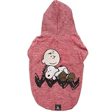

| Moletom Zooz Pets |
|---|
|  |
| R$ 53,00 |
O Moletom Zooz Pets Charlie Snoopy Sleeping Vermelha chegou para arrasar e contribuir com o look despojado do seu cachorro. Além de deixar nossos amados amigos na moda e com conforto, promove praticidade na hora vestir.
- Fabricado com tecido nobre com costura em overlock e linha dupla;
- Oferece garantia e maior durabilidade ao produto;
- Contém abertura na parte superior do pescoço, para a passagem do gancho da coleira;
- Não limita os movimentos do pet ao utilizar;
- O capuz possui forro com tecido em quadrinhos.
| Fantasia Pato Donald |
|---|
| R$ 65,00 |
A Fantasia para Cachorros Pato Donald é uma peça cheia de estilo e super engraçada!
Perfeita para animar e trazer mais fofura para o dia a dia do seu pet!
Quem é fã do pato mais famoso do mundo, vai querer garantir uma dessa pro seu cãozinho.
Uma peça feita para vestir apenas nas pernas da frente do seu cachorro. Ela é fácil de colocar e ajustável com velcro na parte detrás do pescoço.
No momento em que seu cachorrinho caminhar ou correr usando a fantasia com bracinhos, a diversão e os vídeos mais legais estão garantidos!
Composição: malha.
| Fantasia Palhaço |
|---|

|
| R$ 40,00 |
A Fantasia para Cachorros e Gatos Palhaço é super fofa e estilosa!
Feita de cetim e algodão, é confeccionada manualmente, pensando nos mínimos detalhes.
A fantasia completa é composta de gola e chapéu, deixando a peça ainda mais autêntica e divertida, mas você pode optar por levar apenas o chapéu.
O tamanho P é indicado para cachorros e gatos com no máximo 4kg.
O tamanho M é indicado para cachorros e gatos com no máximo 6kg.
O tamanho G é indicado para cachorros e gatos com no máximo 8kg.